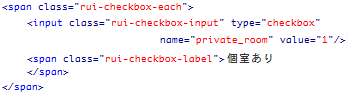

こだわり選択 チェックボックス
ホットペッパー - HotPepper.UI.Kodawari.Checkbox - by Recruit Web Service UI Library
概要
ホットペッパー グルメサーチAPI に「食べ放題」「個室あり」「ランチあり」等のこだわり条件をパラメータとして渡す事で検索結果を絞り込む事ができます。これは、そのこだわり条件を選択する為のチェックボックスUIを簡単に生成するためのモジュールです。
サンプル
動作条件
- jQuery v1.0 以降
簡易なコード例
コピペする事で手軽に再利用が可能なコード例はこちら
使い方
下記のように必要なファイルを読み込んだうえで...
<script type="text/javascript" src="jquery.js"></script> <script type="text/javascript" src="recruit.ui.js"></script> <script type="text/javascript" src="hotpepper.ui.js"></script>
チェックボックスを表示させたい場所にこのようなHTMLを書き...
<div id="hpp-kodawari-checkbox"></div>
最後にこのようなjavascriptコードを書くことで選択可能なチェックボックス群が自動生成されます。
new HotPepper.UI.Kodawari.Checkbox();
jQueryを使って、ページ表示と同時にチェックボックス生成したい場合はこちら:
$( function(){
new HotPepper.UI.Kodawari.Checkbox();
});
マウスオーバー設定
上記サンプルのように、各テキストにマウスオーバーした際に背景色を変える等の変化をつけたい場合はさらに以下のCSSを設定します:
<style type="text/css">
.rui-checkbox-each.hover {
background: #EBB705;
}
</style>
DIVタグでないと駄目？
id値 "hpp-kodawari-checkbox" を設定するHTML要素はDIVタグでないと動作しないのでしょうか？
→いいえ、DIVタグ以外でも appendChild 出来るHTML要素 (dom element) であれば何でもかまいません。
オプション機能
対象DIVのid値を指定したい
デフォルトでは id="hpp-kodawari-checkbox" のHTML要素 (divタグ、pタグ等) を探しにいきますが、これを任意のid値で指定したい場合は以下のように書きます:
new HotPepper.UI.Kodawari.Checkbox({
id: 'my-own-kodawari'
});
あらかじめ選択されている状態にする
各チェックボックスにあらかじめチェックが入っている状態にしたい場合は以下のように、チェックを入れておきたい要素の name 値を配列で指定します:
// コースありと飲み放題と個室ありにチェックをいれておく
new HotPepper.UI.Kodawari.Checkbox({
val: [ 'course', 'free_drink', 'private_room' ]
});
実際の動作例:
選択可能なデザインテンプレート
デフォルトでは3列の表レイアウトでチェックボックス群が表示されていますが、引数 template に以下のいずれかのテンプレート名を指定する事により、各チェックボックスのレイアウト・デザインを変更する事ができます:
// 横並びレイアウトにする
new HotPepper.UI.Kodawari.Checkbox({
template: 'horizontal'
});
選択可能なテンプレート名一覧:
> horizontal
表組みでは無く、単純に横一列にチェックボックスを並べます。通常のテキスト同様、親要素の右端まで届いた際は自動で改行されます。限られたスペースにチェックボックスを表示させたい場合に最適です。
> vertical
縦一列にチェックボックスを配置します。
> table_*c
* の位置に列数を指定することにより、*列組みの表レイアウトが生成されます。
// 例: 2列レイアウト
new HotPepper.UI.Kodawari.Checkbox({
template: 'table_2c'
});
// 例: 4列レイアウト
new HotPepper.UI.Kodawari.Checkbox({
template: 'table_4c'
});
* 枠に収まるようにあえてフォントサイズを小さくしています
なお、template 引数に何も指定しなかった場合のデフォルトレイアウトは table_3c です。
デフォルトUIデザインのCSSクラス設定
各チェックボックスUIには以下のようなCSSクラスが設定されています:

これらCSSを再設定する事である程度、見栄えを変更する事ができます。
new HotPepper.UI.Kodawari.Checkbox({
template: 'horizontal'
});
<style type="text/css">
.rui-checkbox-each {
font-size: 0.7em;
margin-right: 20px;
}
.rui-checkbox-label {
text-decoration: underline;
}
</style>
実際の動作例:
デザインを自由にカスタマイズする
あらかじめ用意されたデザインレイアウトや、CSSクラス設定以上の事を自分で指定したい場合は、以下のように引数 template に自分のカスタマイズ関数を指定することで、自由にレイアウトを作成する事ができます。
new HotPepper.UI.Kodawari.Checkbox({
template: function ( items, box ){
$.each( items, function ( i, itm ){
box.append( '[ ' );
box.append( itm.elm.input ); // チェックボックス
box.append( ' ' );
box.append( itm.elm.label ); // ラベルテキスト
box.append( ' ]' );
});
}
});
実際の動作例:
この際、カスタマイズ関数に渡される引数は以下の2つです:
- items
- 生成されるべきチェックボックスがこの items 配列に格納されています。これをループで回しながらチェックボックスとラベルを作成していきます。配列内の各要素は以下の情報を保持しています:
items[0].name // inputのname属性 items[0].label // ラベルテキスト items[0].value // inputのvalue属性 items[0].checked // 初期チェック状態のbool値 items[0].elm.input // チェックボックス要素 items[0].elm.label // ラベル span タグ
- box
- 最終的に画面に描画される親要素です(jQuery Object型)。ここに items 配列から生成された要素を append() していきます。
マウスオーバーによる背景色変化機能を使いたい場合はループ毎に _create_wrapper_block() をコールすることで受け取れる wrapper 要素で囲んでおくことで有効になります:
new HotPepper.UI.Kodawari.Checkbox({
template: function ( items, box ){
var _self = this;
$.each( items, function ( i, itm ){
var wrap = _self._create_wrapper_block();
wrap.append( '[ ' );
wrap.append( itm.elm.input ); // チェックボックス
wrap.append( ' ' );
wrap.append( itm.elm.label ); // ラベルテキスト
wrap.append( ' ]' );
box.append( wrap );
});
}
});
実際の動作例:
ラベルをクリック不可にする
デフォルトでは各ラベルテキスト "飲み放題" 等もクリックすると該当チェックボックスにチェックが入るようになっていますが、この機能をOFFにしたい場合は以下のようにオプション指定を入れます:
new HotPepper.UI.Kodawari.Checkbox({
clickable_label: false
})
実際の動作例:
クリック不可にすると、同時にマウスオーバーによる背景色変化機能もOFFになります。
チェックボックスが刷新されたタイミングで任意の処理を実行したい
チェックボックスが刷新された直後のタイミング (＝初期化のタイミング) で任意の処理を実行したい場合は、以下のようにオプション指定 - on_update_hook - に任意の処理を記述した無名関数を設定します:
new HotPepper.UI.Kodawari.Checkbox({
on_update_hook: function (){
alert( 'kodawari initialized' );
}
});
この時、以下のプロパティから各種状態を取得できます:
| this.get_current_stat() | 取得可能な情報は下記 "現在のプルダウン内容を取得" の項を参照 |
| this.elm | プルダウン要素の jQuery オブジェクト。$( '#hpp-kodawari-checkbox' ) の戻り値と同じ。 |
HotPepper.UI.Kodawari.Checkbox({
on_update_hook: function (){
var obj = this.get_current_stat();
alert( obj.list.length ); // チェックボックスの総数
}
});
簡単なサンプルはこちら:
on_update_hook のサンプルコード
現在のプルダウン内容を取得
get_current_stat() メソッドにて、すべてのチェックボックス要素の値とラベルをリストで取得したり、現在選択中の値を取得する等、チェックボックス情報を別途加工する際に便利な情報を取得できます:
var p = new HotPepper.UI.Kodawari.Checkbox(); var obj = p.get_current_stat();
この時の戻り値 (object) の中身は以下の通りです:
| obj.val.names | 現在チェックが入っているチェックボックスの名前ハッシュ。例) { 'wedding:1, mobile:1 } |
| obj.val.names | 現在チェックが入っているチェックボックスの値リスト。例) [ 1, 3, 5 ] |
| obj.list | 全チェックボックスの値と名称を含んだ Array オブジェクト。Array 内の各要素は val (値) と text (名称) と name (name属性) プロパティを保持 - 例) obj.list[0].val // 1 obj.list[0].text // 飲み放題 obj.list.[0].name // free_drink |
簡単なサンプルはこちら:
get_current_stat() のサンプルコード